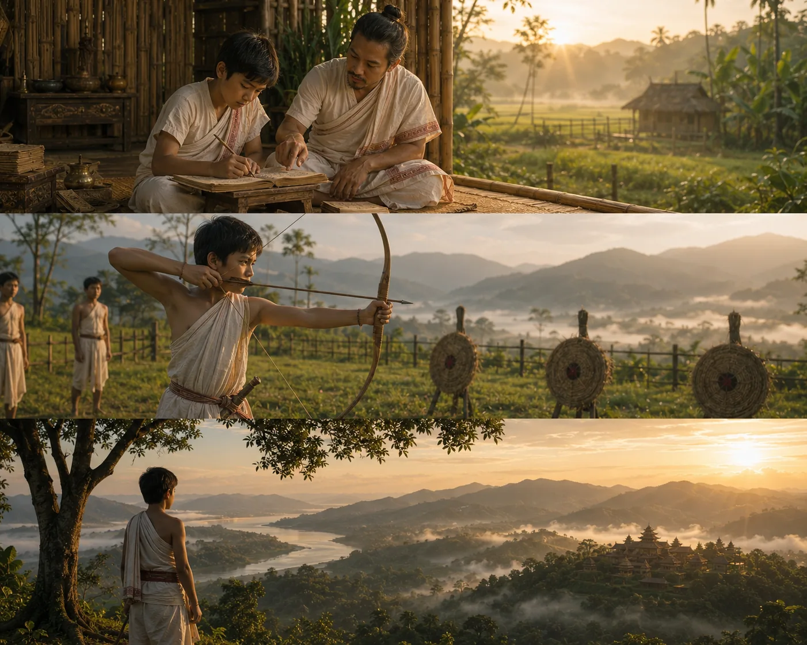

Prince Sudang Raised in Brahmin Household
c. 1390–1397 · The coming of Sukaphaa

Prince Sudang grows up oblivious to his royal identity, tending cattle and studying Sanskrit scriptures alongside Brahmin children at Habung.
Sources have not yet been catalogued for this record.
People: Sudangphaa (Bamuni Konwar)
Open this scene in the interactive archive · Follow this event on MAP